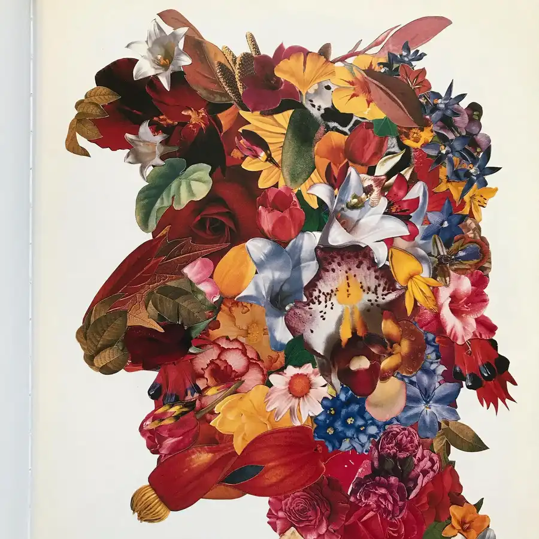
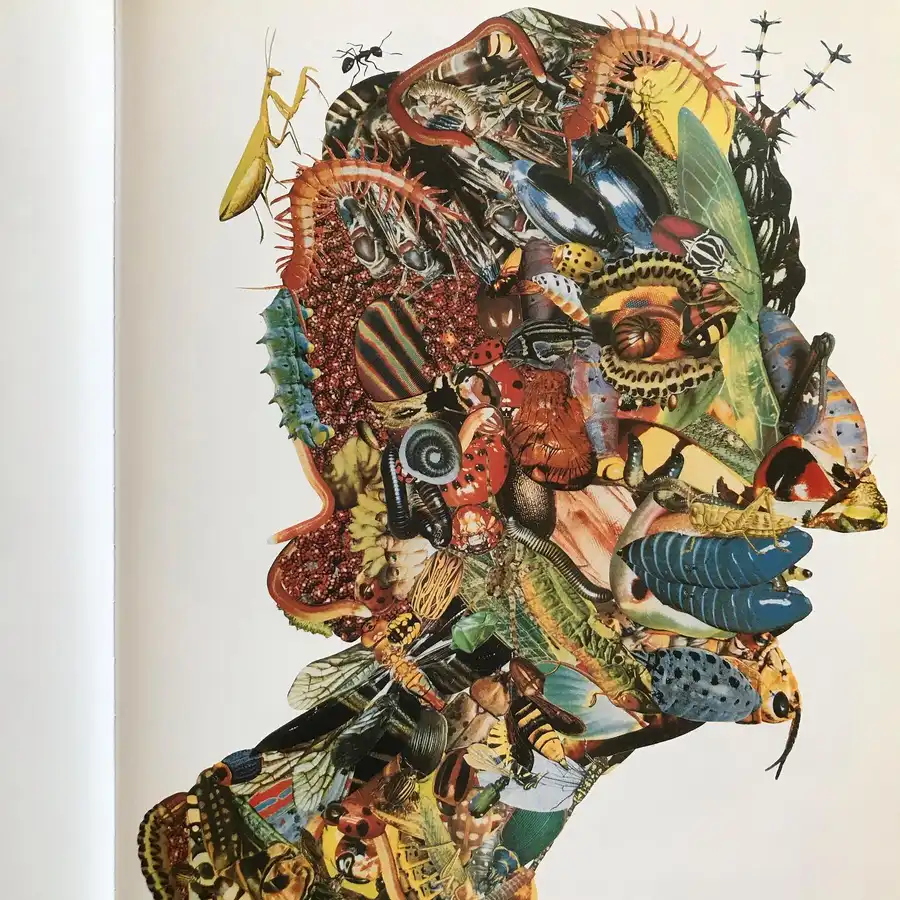
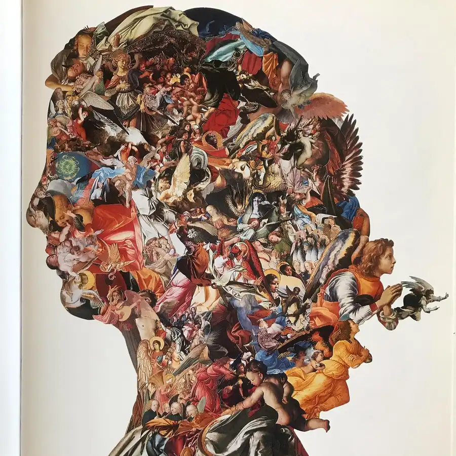
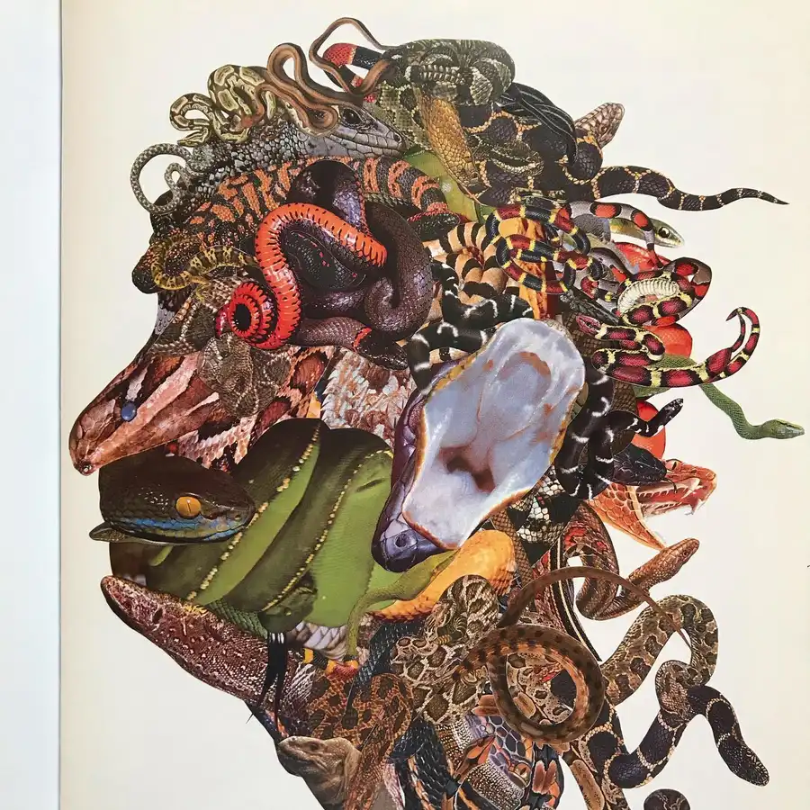
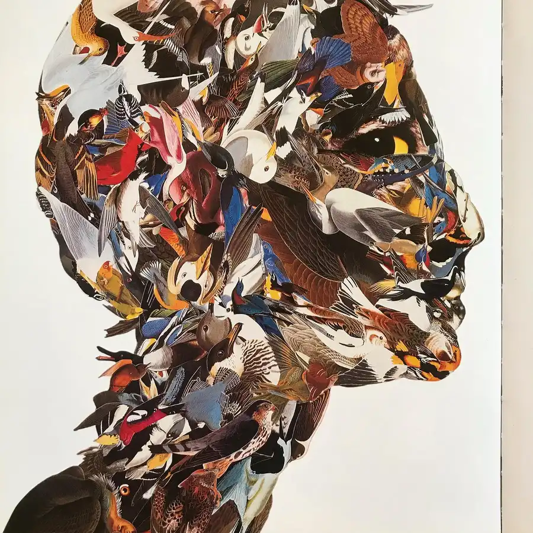

Here is The World that Loved Books, a clever and inviting mood piece by @stephenparlato. The story takes place in a marvelous land populated by voracious readers whose avid consumption of books causes them to transform bodily into their chosen subject matter. This simple but delightfully oddball premise affords Parlato a narrative setting for his remarkably intricate and inventive collages. Leaf through and behold a menagerie of expressionistic figures: an eye created by a whorl of rose petals, a pair of lips made from two fat blue grubs, an ear formed out of a snake’s gaping jaws and throat. #world #loved #love #collage #collageart #collageartist #collageartwork #book #books #childrensbooks #beautifulbooks #picturebook #picturebooks #picturebookillustration #picturebookillustrations #picturebookart #childrensbookillustration #childrensliterature #illustration #kidlit #kidsbooks #bookworm #booklover #booklovers #bibliophile #bookstagram #bookstagrammer #bookstagrammers #instabook #instabooks





